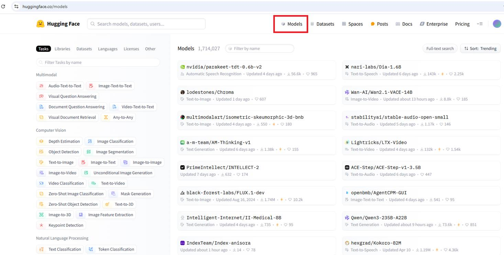
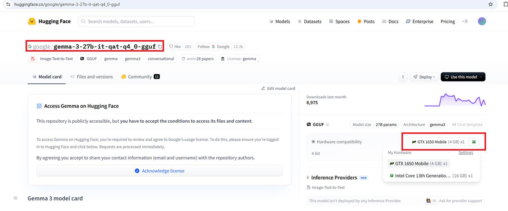
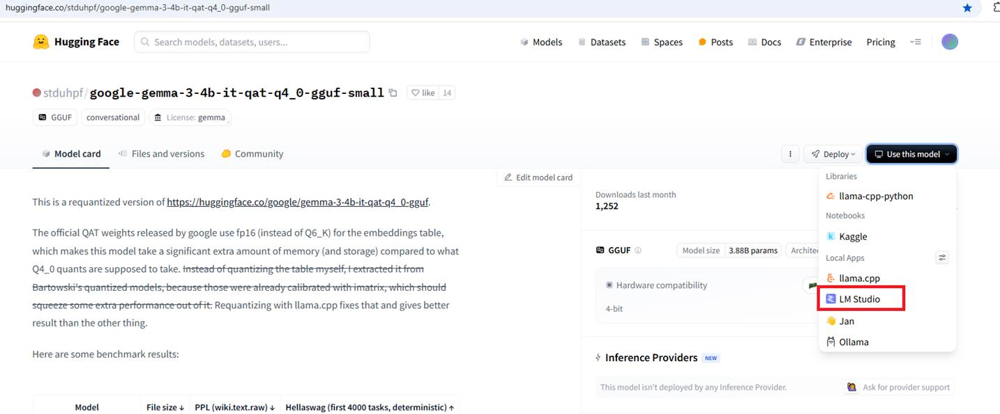
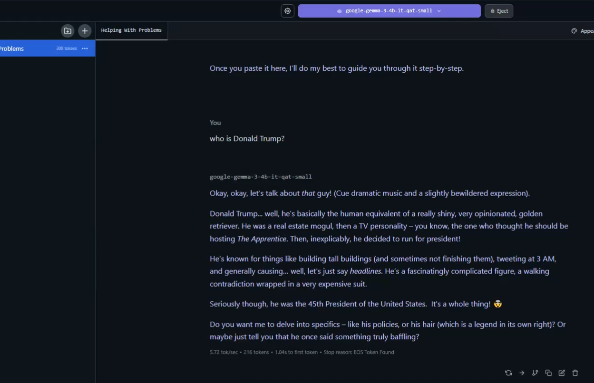

Running the Multimodal AI Chat App with LM Studio Using a Locally Loaded Model.
Video Link: https://youtu.be/DW75yo6W710
GitHub Repository: https://github.com/Ashot72/LM-Studio-local-chat-app
We would like to explore how to run large language models (LLMs) locally on our machines, such as our laptops. If we don't have a supercomputer at home, then
we need to find a way to run them efficiently. We can achieve this with the help of quantization, which allows us to run large models on smaller machines by
lowering hardware requirements without impacting the performance.
The training of models should be executed on GPUs because they can perform many calculations in parallel, which is essential for producing results efficiently.
GPUs are excellent at handling parallel computations. A CPU, on the other hand, can switch between different tasks but processes them sequentially, one after another.
In addition to a GPU or CPU, we also need enough RAM or video RAM (VRAM). VRAM is the memory directly attached to the GPU. When we have a GPU, it
typically comes with VRAM, which allows faster and more direct access compared to regular system memory.
When we use a model, all its parameters (weights), as well as the context window, which essentially includes the chat history, your input messages,
and the model's output messages, must be loaded into memory and remain there during execution.
When we don't have a lot of memory, we won't be able to load larger models. However, we can still run smaller models, and we'll also explore ways to reduce
the hardware requirements of larger models so they can run on regular laptops, especially high-end ones.
An LLM (Large Language Model) is, at its core, a neural network trained using a specific algorithm. As a result of the training process, the model ends up with billions of parameters
because there are billions of connections. Each connection has an associated parameter, or weight, which determines how a value is transformed as it passes through different nodes in the network.
Each parameter is typically a float32 or float16 value after the initial training process. A float32 (32-bit floating point) uses four bytes per parameter and provides higher precision
it can store longer decimal numbers. A float16 (16-bit floating point) uses two bytes per parameter and is less precise. You can imagine that a 2-billion-parameter model is actually quite small.
We're now talking about models with 600 to 700 billion parameters.
Though a 2-billion-parameter model is small, it still requires 4 to 8 GB of memory.
In order to run bigger models on our machines, we use a solution called quantization, which helps reduce memory requirements.
Quantization is essentially a compression mechanism. Originally trained models take up a lot of memory, but through a mathematical process, their parameter values are transformed into less precise
numbers. Instead of using float32 or float16, the values are typically converted to int8 or int4 which are integer types, meaning they don't store decimal places.
The great news is that the quantization algorithms used for this transformation are so effective that the model's performance its quality and accuracy
is essentially unchanged. We get the best of both worlds: a model that performs well but takes up significantly less space and memory than the original version.
With quantization, we're talking about using half a byte (int4) or one byte (int8) per parameter instead of two (float16) or four (float32). This means we essentially need around
one-fourth of the original memory that the uncompressed model would have required.
After quantizing a 2-billion-parameter model (using integers):


Figure 1
If we go to the Hugging Face website, we can see many models available.
Figure 2
This is the original, non-quantized Google model Gemma-3-27B-IT, which has 27 billion parameters.
|
So, quantization can reduce memory usage drastically—from 108 GB with float32 down to as little as 13.5 GB with int4. |
|
|
|
|
|
|
|
We do not use raw models found on Hugging Face, and if you click the “Use this model” option, you won't see any local deployment options because these models are not prepared to be executed locally.
|
|
|
|
Figure 3 If we scroll down a bit, we'll see some derivatives based on this model. For example, fine-tuned versions that may perform better at certain tasks, and very importantly quantized versions that we can run locally.
|
|
|
|
Figure 4 If you click on the Quantization link, you'll find quantized versions that have the same number of parameters.
Figure 5 Originally, the parameters were stored as float16 values. Now, with quantization, the model uses 4-bit integers and requires about 17.2 GB of memory. It is also worth noting that the GGUF file type is used, which is typically associated with quantized models. We should have a GPU capable of running the model, along with enough VRAM to load the quantized parameters. However, if we don't have a suitable GPU, that's okay in this case, the CPU and regular system RAM can also handle the model, though it will run more slowly. Because not all open models can run on every machine even with quantization the great thing is that on Hugging Face, we can create a free account and share our hardware profile.
|
|
|
|
Figure 6 Go to the Settings.
|
|
|
|
|
|
|
|
Figure 7 Under Local Apps and Hardware, we can share our hardware profile. In my case, my GPU is an NVIDIA GTX 1650 Mobile with 4 GB of VRAM, and my Intel i7 CPU has 16 GB of RAM. It tells us whether our hardware is good or not, and as you can see, I'm on the lower end.
 |
|
|
|
Figure 8 If we go back to the quantized model, you'll see the hardware profile I shared.
|
|
|
|
|
|
|
Figure 9
The tooltip says that the model is probably too large for my hardware.
Figure 10
For that reason, I will use a smaller model (4-bit) with 3.88 billion parameters that requires 2.36 GB of memory. In this case, it says: "The model is likely to run on your hardware."

Figure 11
You should also make sure that the selected model is supported by the local app, (LM Studio in our case) you plan to use.
Figure 12
Navigate to https://lmstudio.ai/ and download LM Studio for your operating system.
LM Studio is an amazing application that provides a great, user-friendly interface for running and working with open models locally on your system.
Figure 13
From the video, you can see that LM Studio also shows whether a selected model is too large for your machine. I simply searched for the model I had checked on Hugging Face,
shared my hardware parameters, and downloaded it.

Figure 14
You can download several models such as Gemma, DeepSeek, and Croc and load the one you'd like to work with.
The LM Studio interface is very intuitive. Let's explore some features.
Figure 15
You can add a system prompt, and the LLM will take it into consideration when answering you.

Figure 16
Asking 'Who is Donald Trump?' and expecting a response in a funny way.
Figure 17
This is the answer when the system prompt was removed.
Figure 18
You can regenerate the response, continue if it was suspended or cut off, or edit it. Your edited response will remain in the chat history, and the LLM will consider it when generating new responses.
Figure 19
We may want to simulate a certain AI response and artificially create a chat history that never actually happened. We can do this by switching the roles. For example, we can start
with an Assistant message like 'Hi, ...' to simulate an AI response that didn't occur naturally. The LLM will still generate a reply as if a regular user sent the message, but internally, it
will be stored as an AI message.
Figure 20
When you select a model, you can see whether it supports multimodal input, such as images or files. If it does, you can upload a file and ask questions about it, such as summarizing information
from the file, and more
Figure 21
With LM Studio, we can use it programmatically. We can build our own applications that rely on locally running models, without having to pay for access to a proprietary model's API.
We can enable the LM Studio server in developer view to see the local host we are connecting to.
Figure 22
You can see that I was able to send a message from Postman and receive a response back from the LM Studio server running locally.
Figure 23
One of the great things about these locally running tools is that, besides their own API, they support the OpenAI SDK, which has become the de facto standard for interacting with LLM APIs.
Many other providers have adopted it.
Figure 24
I previously created a multimodal chat application that connected to OpenAI to use their LLM. To make the same app work with a local LLM, I changed only two things, nothing else.
I updated the baseURL to point to the local server (just the base URL, not the full completion path like in Postman) and specified the model's name. There's no need for an OpenAI API
key since everything runs locally. It works because the LM Studio server supports the OpenAI SDK.
Figure 25
When I tried to upload an image (not a file) and asked it to describe the image, it crashed.
Figure 26
The issue seems to be related to my VRAM, as processing the image requires more memory. I tried enabling the option shown in the picture, but the problem persisted.
Figure 27
I tried turning the option off to run the model only on the CPU.
Figure 28
Now I can see the result, but it takes minutes to process the response on the CPU.